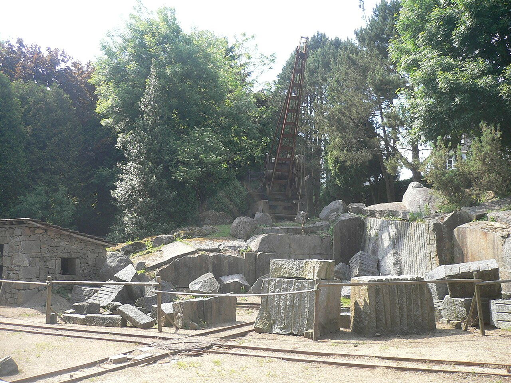

Parc-musée du Granit : découvrir le Bleu de Vire et le métier de carrier
Dans cette fiche
L’essentiel pour visiter
À Saint-Michel-de-Montjoie, le Parc-musée du Granit explore l'histoire du Bleu de Vire, pierre extraite dans les carrières du Sud-Manche. Outils, carrière de démonstration, parcours de découverte et sculptures en plein air relient l'histoire industrielle du site à la création contemporaine. L'entrée est gratuite ; pour 2026, l'office de tourisme annonce une ouverture quotidienne de 10 h à 18 h.



SAINT-MICHEL-DE-MONTJOIE
Pourquoi appelle-t-on cette pierre le « Bleu de Vire » ?
Le granit exploité à Saint-Michel-de-Montjoie doit son surnom à sa teinte grise aux nuances bleutées. La commune se trouve dans le prolongement du massif granitique qui relie le secteur de Carolles à celui de Vire. Ce matériau résistant a servi à fabriquer des blocs de construction, des pavés, des bornes, des éléments agricoles et des monuments.
Le travail des carrières connaît un essor au début du XXe siècle. Le Réseau des musées de Normandie évoque une centaine de carrières de tailles diverses dans les années 1930 autour de Saint-Michel-de-Montjoie. Cet essor mobilise carriers, tailleurs et transporteurs. Le parc conserve le souvenir de cette économie locale qui a laissé des traces dans les paysages et les bâtiments.
Carrière, outils et jardin des sculptures
Le parcours de plein air traverse des espaces consacrés à la géologie, à l'extraction et à la taille. Une carrière de démonstration, du matériel ancien et des outils de carrier permettent de comprendre les étapes entre le bloc brut et l'objet fini. Des cartels mettent en relation les pièces de granit et leur usage : éléments d'architecture, objets funéraires, matériels agricoles, bornes et monuments.
Dans le jardin de sculptures, plus d'une douzaine d'œuvres monumentales relient la pierre locale à des démarches artistiques récentes, notamment celles issues des résidences Sculptures In Situ. Le contraste avec les outils anciens est intéressant : la même matière passe du chantier à l'atelier d'artiste, mais les intentions et les gestes changent.
Ce musée n'est pas une carrière industrielle à visiter librement en dehors d'un parcours balisé. La présence d'une zone de démonstration ne signifie pas que des tailleurs de pierre travaillent devant le public chaque jour ; ces animations sont ponctuelles.
Un parcours à observer et toucher avec les enfants
Un parcours de découverte adapté aux 6–12 ans invite à reconnaître les différences entre roches et à observer les usages et les techniques de taille du granit. Les questions des bornes poussent à regarder la texture des pierres et les traces d'outil plutôt qu'à mémoriser une longue chronologie. Il s'agit d'un moyen accessible d'aborder les matières premières et les métiers artisanaux.
Les espaces en plein air et le jardin de sculptures peuvent compléter une sortie en famille. Une aire de pique-nique non couverte est annoncée. Les chiens sont acceptés selon l'office de tourisme, mais le règlement précis et les possibilités d'accès à l'ensemble du parcours peuvent évoluer. Le musée ne publie pas d'information assez détaillée pour garantir la circulation en fauteuil sur toutes les parties du terrain : contactez l'équipe pour un besoin particulier.
Horaires et tarifs du Parc-musée du Granit en 2026
La fiche 2026 de Destination Mont Saint-Michel Normandie annonce une ouverture du 1er janvier au 31 décembre, tous les jours de 10 h à 18 h, avec entrée gratuite. Le Réseau des musées de Normandie conserve toutefois un ancien calendrier saisonnier, clairement daté de 2024. Ce calendrier archivé ne doit pas remplacer les horaires 2026, mais il reste prudent de vérifier la situation au 06 79 69 51 36 en cas de déplacement hors vacances.
Le musée se situe au 55 impasse du Musée, 50670 Saint-Michel-de-Montjoie. Il ne dispose pas d'un parking réservé ; les places proches de l'église et de la mairie sont mentionnées comme solutions de stationnement. Les groupes de 15 à 30 personnes peuvent solliciter des visites guidées et, ponctuellement, des démonstrations de taille. Le prix de 2,50 € par personne indiqué dans la notice régionale est ancien : demandez le tarif de groupe effectivement applicable en 2026.
Pour prolonger la découverte du patrimoine artisanal, le Musée de la Poëslerie montre les métiers du cuivre, tandis que le Moulin de pierre de Hauville évoque une autre activité technique. Retrouvez également les musées de Normandie et l'annuaire national.